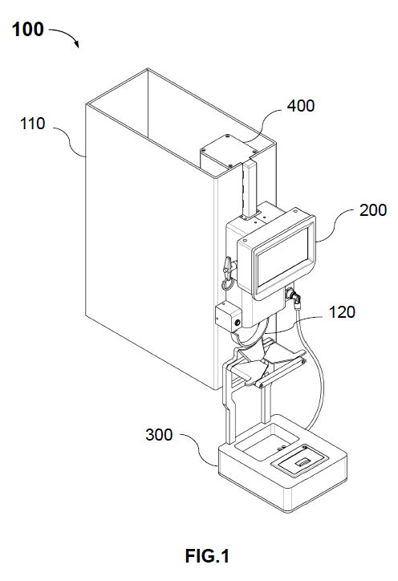
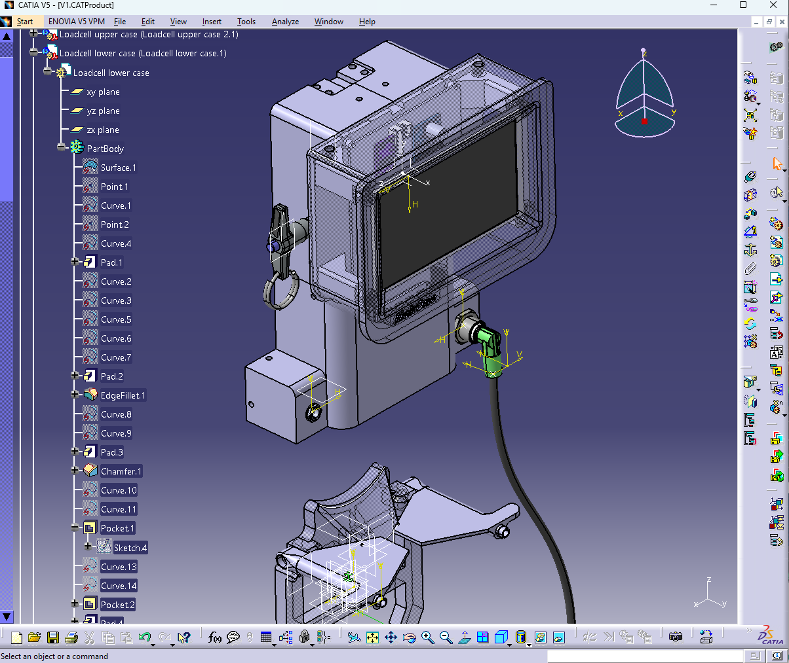
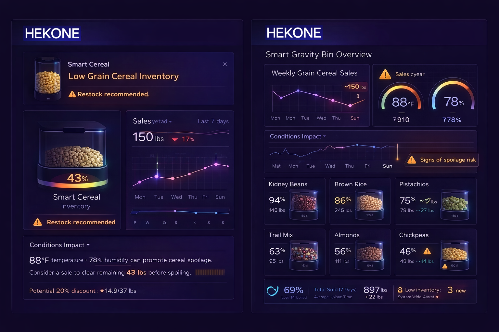

From physical flow to measurable signal.
Smart Gravity Bin is one example of how HEKONE instruments real-world activity at the shelf level — turning product movement into structured signals that help quantify variance in real terms, identify hidden operational loss, and translate usage into cost impact.

Estimated Operational Impact
Even directional modeling can create the right context: translate usage into cost impact, identify hidden operational loss, and quantify variance in real terms before it compounds across locations.
See the HEKONE Smart Dispenser in action.
This short demo shows a real working prototype translating physical dispensing activity into measurable signal. It is an early proof point of how HEKONE can connect real-world interaction to structured operational visibility, surface hidden loss earlier, and translate usage into cost impact.
What this demo represents
This is not a concept rendering or mock interface. It is a real prototype demonstration showing how HEKONE can instrument a physical interaction point, identify hidden operational loss, and convert that moment into usable data.
The shelf is often where visibility breaks down — and where significant, untracked loss occurs.
In many physical environments, product leaves the shelf or dispensing point without reliable real-time measurement. Systems may report inventory later, but they often miss what actually happened in the moment — making it harder to quantify variance in real terms or identify hidden operational loss before cost accumulates.
What goes wrong
- Consumption happens without direct measurement.
- Inventory updates can lag behind real events.
- Reported counts may not match physical reality.
- Leakage, waste, or shrink can stay invisible.
Why it matters
- Operators lose confidence in what the system reports.
- Replenishment decisions become reactive.
- Exception handling happens too late.
- Accountability is weakened at the exact handoff point that matters.
What this typically looks like
Most dispensing environments operate with 2–8% untracked variance between expected and actual usage.
For a single location, that can represent $3K–$15K+ annually depending on volume.
Across multiple locations, the impact scales quickly.
Why this gets missed
In many environments, teams only see the result later — after inventory drift, waste, or unexplained variance has already accumulated.
Without real-time measurement at the point of use, operators are often left reconciling symptoms instead of seeing the event itself or translating usage into cost impact.
Capturing physical activity as a usable signal.
The role of this prototype is simple: detect product movement at the point of interaction and convert that change into structured, AI-ready signal data that helps quantify variance in real terms and translate usage into cost impact across operations.
Measure
Weight-based detection monitors change directly at the dispensing point instead of relying on delayed manual input.
Structure
Each physical event can be translated into usable operational data that supports exception tracking, visibility, reporting, and quantification of real-world variance and cost impact.
Connect
The captured signal can feed a broader HEKONE workflow, where physical events become part of a measurable operational system with decision-ready cost context.
Part of the HEKONE system — not the whole system.
Smart Gravity Bin is best understood as a signal-generating node. It does not define the platform. It contributes one stream of visibility for one type of operational blind spot — helping teams identify hidden operational loss sooner.

Designed for real-world deployment
This prototype is supported by a structured engineering design, developed to operate reliably in physical environments.
- Integrated sensing and dispensing architecture
- Designed for continuous, real-time measurement
- Supports scalable deployment across multiple locations
- Built with manufacturability and integration in mind
The system design has been filed as part of an intellectual property framework supporting HEKONE’s broader platform vision.
Most deployments are designed to validate measurable ROI within the first operational cycle.

Illustrative dashboard view for Smart Gravity Bin.
This example shows how one instrumented dispensing point can connect to a practical dashboard layer. It combines fill-level visibility, weekly sales trends, temperature and humidity monitoring, discount decision support, multi-bin operational oversight, and the ability to translate usage into cost impact and support cost-aware decisions.

Single-bin operational view
- Tracks weekly or monthly sales of a selected grain or cereal bin.
- Shows percentage fill level to indicate how full the gravity bin is.
- Monitors temperature and humidity conditions that may affect product quality.
- Can trigger recommendations for discounting inventory when spoilage risk increases.
- Can flag low-fill conditions when a bin is approaching refill threshold.
Multi-bin overview
- Summarizes many gravity bins across grains, beans, nuts, pistachios, almonds, chickpeas, and mixed products.
- Displays each bin's fill percentage as a direct indicator of current capacity utilization.
- Provides a compact snapshot of recent sales by product.
- Highlights which bins are nearing empty and should be recharged first.
- Supports store-level prioritization instead of relying on manual visual checks alone.
Where HEKONE creates immediate value.
HEKONE is not built around one device, one sensor, or one workflow. Different use cases may require different forms of instrumentation — but in each case, small inconsistencies can compound into measurable operational loss.
Typical environments see 2–5% untracked loss or process inefficiency — often invisible in reporting.
Retail shrink visibility
Capture movement where conventional systems do not see it, before the loss is written off as normal variance.
Warehouse accountability
Add physical confirmation to internal movement so teams can compare recorded flow against actual behavior.
Manufacturing control
Surface usage variance earlier at the production level instead of discovering it later through reconciliation.
Supply chain traceability
Make handoff points more measurable so discrepancies are visible before they scale across the network.
From one measurable point to broader operational control.
The same principle can extend across factory, distribution, store, and shelf environments — creating a unified layer of measurable, AI-enabled operational intelligence across fragmented physical workflows — starting from a single point and scaling across operations.
Validate real operational impact in your environment.
HEKONE helps teams measure what is currently invisible — quantify variance, identify hidden loss, and translate real-world activity into cost impact. A focused pilot creates immediate visibility without requiring full system change.